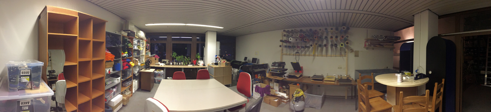

Schnittstelle (Textilien)
In der Schnittstelle findet sich alles zum Thema Textilien. Dazu gehört sowohl die Textilveredelung, also das Bedrucken und Besticken von Textilien, als auch die Herstellung von Textilien, zum Beispiel mit Nähmaschinen, Strickmaschinen oder klassisch per Hand.

Textilveredelung
Es gibt im Space verschiedene Maschinen, mit denen wir schon bestehende Textilien verschönern können.
Immer wieder gibt es bei uns Aktionen, in denen T-Shirts mit Bügelfolie verziert oder auch mithilfe von Siebdruck veredelt werden.
Schneideplotter und Transfer-Presse
Unsere Schneideplotter können eine Bügelfolie (Transferfolie) per Schneidmesser
präzise ausschneiden. Dafür wird ein digitales Design, meist eine .svg-Datei,
verwendet. Die Folie wird nach dem Schneiden per Hand “entgittert”, das heißt
die nicht gewünschten Flächen werden entfernt.
Danach kann die fertige Folie auf das Textil gelegt und mit der Transfer-Presse festgebügelt werden.


Siebdruck-Station
Beim Siebdruck wird Farbe mithilfe eines feinmaschigen Siebes auf den Stoff aufgetragen. Dabei ist das Sieb an bestimmten Stellen durch eine Schablone undurchlässig, sodass die Farbe nur dort durchgedrückt wird, wo das Motiv erscheinen soll. Der Stoff wird anschließend getrocknet und fixiert, damit der Druck dauerhaft hält.
Die Siebe können wir sogar im Space herstellen: Dazu wird das Sieb zuerst mit einer lichtempfindlichen Emulsion beschichtet. Anschließend legt man eine Vorlage darauf und belichtet es unter UV-Licht: Die belichteten Stellen härten aus, die abgedeckten (Motiv-)Bereiche bleiben weich und werden danach mit Wasser ausgewaschen – so entstehen die durchlässigen Druckbereiche im Sieb.

Stickmaschine
Wir haben im Space auch eine computergesteuerte Stickmaschine, mit der – ähnlich wie beim Nähen – mit Nadel und Faden Motive auf ein Stück Stoff aufgestickt werden können.

Textilherstellung
Auch für die Herstellung von Textilien gibt es im Mainframe eine Vielzahl von Maschinen.
Nähmaschinen
Zunächst gibt es eine Reihe von Nähmaschinen. Dabei sind einige moderne Maschinen, die auch komplexe Stiche umsetzen können und einige ältere Geräte, die auch bei einem Stromausfall gut funktionieren.
Haushaltsnähmaschinen
Haushaltsnähmaschinen für “normale” Anwendungsfälle. Die älteren Maschinen können auch gut mit etwas dickerem Stoff umgehen.


Overlock-Nähmaschine
Overlock-Nähte sind flexibel, sauber und eignen sich gut für Kleidung. Wir haben eine Overlock-Maschine von Singer im Space.

Ledernähmaschine
Die Ledernähmaschine stammt ursprünglich aus der Werkstatt einer Schuhmacherin – sie eignet sich gut, um mehrere Schichten dickeres Leder zusammenzunähen, hilft aber auch bei Stiefeln, Rucksäcken oder anderen tiefen Werkstücken, weil sie einen sehr langen Freiarm hat und der Nähfuß um 360 Grad gedreht werden kann.

Strickmaschinen
Schon seit einigen Jahren gibt es in unserem Space mehrere Strickmaschinen. Lange standen sie ungenutzt herum, doch inzwischen haben wir sie gründlich gereinigt, teilweise repariert und wieder in Betrieb genommen. Mit viel Einsatz – und ein paar selbstgebauten Ersatzteilen – laufen sie jetzt richtig gut.
Aktuell sind es drei funktionsfähige Maschinen: Eine große Doppelbett-Maschine von Singer (Singer Memo II), die auch programmiert werden kann, und zwei einfachere Empisal-Schnellstricker (einmal in der normalen und einmal in der Mini-Variante).
Die Singer eignet sich auch um runde Strickstücke, zum Beispiel Socken, herzustellen und kann durch das zweite Bett auch linke Maschen arbeiten.

Die Empisal-Maschinen sind deutlich einfacher aufgebaut und dadurch auch leichter zu bedienen.